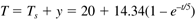

| [ Team LiB ] |
|
3.5 First-Order BehaviorMany chemical processes can be modeled as first-order systems. The differential equation for a linear first-order process is often written in the following form: This can also be written as where the parameters (tp and kp) and variables (y and u) have the following names: tp is the process time constant (units of time), kp the process gain (units of output/input), y the output variable, and u the input variable. Taking the Laplace transform of each term (notice that we are now using lower-case variables to represent the Laplace domain input and output), and assuming that the initial condition is y(0) = 0, So the Laplace transform of Equation (3.25) can be written
or solving for y(s) we find a first-order transfer function
Step ResponseConsider the case where the output is initially zero (steady state in deviation variable form), and the input is suddenly step changed by an amount Du. The Laplace transform of the input is So Equation (3.26) can be written Using a partial fraction expansion and inverting to the time domain, you should find (see Exercise 1) Here the notion of a process gain is clear. After a substantial amount of time (t >> tp), we find, from Equation (3.29), That is, and, since y(0) = 0, we can think of y(t We can think of the process time constant as the amount of time it takes for 63.2% of the ultimate output change to occur, since when t = tp, Remember that this holds true only for first-order systems. Impulse ResponseConsider now an impulse input of magnitude P, which has units of the input*time; if the input is a volumetric flow rate (volume/time), then the impulse input is a volume. The output response is You should find that the time domain solution is which has an immediate response of Pkp/tp followed by a first-order decay with time. Example 3.4: Stirred-Tank HeaterRecall that an energy balance on a constant-volume stirred-tank heater (Example 2.3) yielded where the subscript s is used to indicate that a particular variable remains at its steady-state value. Defining the following deviation variables The equation can be written in the form or where the parameters of this first-order model are The gain and time constant are clearly a function of scale. A process with a large steady-state flow rate will have a low gain, compared to a process with a small steady-state flow rate. This makes physical sense, since a given heat power input will have a larger effect on the small process than the large process. Similarly, a process with a large volume-to-flow rate ratio is expected to have a slow response compared to a process with a small volume-to-flow rate ratio. Consider a heater with a constant liquid volume of Vs = 50 liters and a constant volumetric flow rate of Fs = 10 liters/minute. For liquid water, the other parameters are rcp = 1 kcal/ liter°C. The process gain and time constant are then Step ResponseIf a step input change of 10 kW is made, the resulting output change is [from Equation (3.29)] A plot of the step input and the resulting output are shown in Figure 3-6. Figure 3-6. Step response of a stirred-tank heater, characteristic of a first-order system. Deviation variables.Remember that the inputs and outputs in this expression are in deviation variable form. If the steady-state values are (for an inlet temperature of 20°C) Then, the physical temperature response is  Impulse ResponseIf an impulse input of 30 kJ is made, you should be able to show that the temperature changes immediately by 0.143°C (see Exercise 15). |
| [ Team LiB ] |
|

 ) as D
) as D